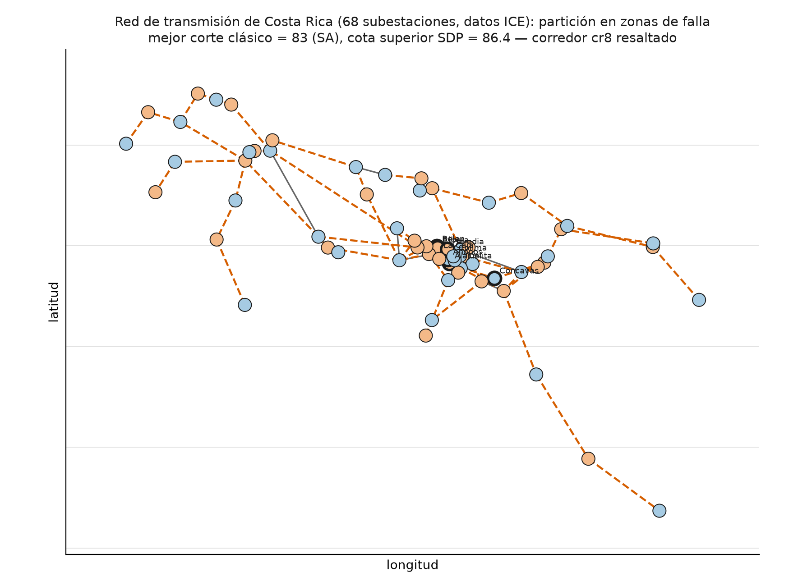
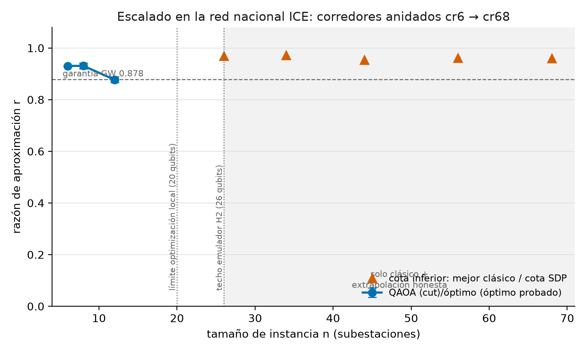

Zonas de aislamiento de fallas en la red eléctrica de Costa Rica, como Max-Cut / QAOA
Corredor real de 8 subestaciones del GAM (datos abiertos del Grupo ICE) particionado en dos islas: modelado como Max-Cut, convertido a QUBO, resuelto con QAOA en emuladores Quantinuum H2 vía Nexus, y comparado honestamente contra las líneas base clásicas más fuertes. La misma malla de corredores escala, con el mismo criterio determinista, hasta la red nacional completa — 68 subestaciones.
La red real, particionada
Corredor de transmisión del Gran Área Metropolitana. La partición óptima (corte = 7 de 9 líneas) separa la red en dos zonas de aislamiento; las líneas discontinuas son el corte — los puntos donde se seccionaría la red ante una falla.
QAOA: calidad de la solución vs profundidad
Razón de aproximación r = ⟨corte⟩/óptimo en cr8-uniforme. Los ángulos se optimizan localmente (statevector exacto); el emulador muestrea con esos ángulos — el split híbrido estándar a escala NISQ. En las tres fuentes la mejor muestra alcanza el óptimo (r = 1.0).
Contra las líneas base clásicas
Cada instancia trae su óptimo congelado y probado con dos anclas independientes. Goemans-Williamson (SDP, garantía ≥ 0.878) encuentra el óptimo exacto en todas.
| Instancia | Óptimo | GW | Cota SDP | Greedy | SA |
|---|---|---|---|---|---|
| cr6-uniforme | 5 | 5 | 5.2 | 5 | 5 |
| cr8-uniforme | 7 | 7 | 7.5 | 7 | 7 |
| cr8-voltaje | 1150 | 1150 | 1242.0 | 1150 | 1150 |
| ieee9-uniforme | 9 | 9 | 9.0 | 9 | 9 |
| ieee14-flujo | 57070 | 57070 | 57766.9 | 56814 | 57070 |
| ieee30-flujo | 32170 | 32170 | 33076.8 | 30197 | 31862 |
| Emulador · instancia | p | r media | mejor muestra |
|---|---|---|---|
| H2-1LE · cr8-uniforme | 1 | 0.8556 | óptimo |
| H2-1LE · cr8-uniforme | 2 | 0.9088 | óptimo |
| H2-1LE · cr8-uniforme | 3 | 0.9441 | óptimo |
| H2-Emulator · cr8-uniforme | 3 | 0.9344 | óptimo |
| H2-1LE · cr8-voltaje | 3 | 0.9154 | óptimo |
| H2-1LE · ieee14-flujo | 3 | 0.8548 | óptimo |
| H2-1LE · ieee9-uniforme | 3 | 0.8506 | óptimo |
Corrida completa (19 combinaciones) en runs/nexus/; cada corte se recomputa clásicamente desde los bitstrings muestreados — verificación agnóstica del backend.
Escalando de 8 a 68 subestaciones: la red nacional completa
El mismo criterio determinista de crecimiento de corredor (greedy, más denso desde la subestación de mayor grado) genera una familia anidada cr8 ⊂ cr12 ⊂ … ⊂ cr68 — el grafo de transmisión nacional completo. Hasta 20 nodos el óptimo está probado con doble ancla (fuerza bruta + espectro); más allá, sin fingir un óptimo que no se puede probar, reportamos el intervalo honesto [mejor corte clásico hallado, cota SDP].


| n | Estado | Óptimo / mejor hallado | GW | SA | Greedy | Cota SDP | r garantizado |
|---|---|---|---|---|---|---|---|
| 8 | probado | 7 | 7 | 7 | 7 | 7.50 | 1.0000 |
| 12 | probado | 14 | 14 | 14 | 13 | 14.32 | 1.0000 |
| 16 | probado | 22 | 22 | 22 | 20 | 22.54 | 1.0000 |
| 20 | probado | 26 | 26 | 26 | 24 | 26.79 | 1.0000 |
| 26 | intervalo | 34 | 34 | 34 | 30 | 35.07 | 0.9695 |
| 34 | intervalo | 44 | 44 | 44 | 37 | 45.29 | 0.9716 |
| 44 | intervalo | 55 | 55 | 55 | 49 | 57.67 | 0.9538 |
| 56 | intervalo | 69 | 69 | 68 | 65 | 71.75 | 0.9617 |
| 68 (nacional) | intervalo | 83 | 82 | 83 | 81 | 86.43 | 0.9603 |
Hallazgo honesto: a n=68 el recocido simulado (SA) supera a Goemans-Williamson por primera vez en toda la escalera (83 vs 82) — ninguna heurística clásica domina universalmente a esta escala, que es exactamente por qué reportamos un intervalo y no un número inventado.
El muro cuántico: QAOA con barrido completo (p=1..3, 5 semillas) corrió hasta cr12 (r = 0.792 → 0.877 al aumentar p); cr16/cr20 tienen óptimo clásico probado pero el barrido cuántico local aún no se ejecutó a esa profundidad — documentado, no escondido. Más allá de 20 qubits (optimización local) y 26 (techo del emulador H2), no hay pata cuántica posible con el hardware disponible hoy.
Entregables del reto
Además del código y los datos, el reto pide un paquete de entrega formal — generado
desde el mismo reproduce.py, nunca escrito a mano.
Planteamiento, QUBO exacta, QAOA, líneas base, escalera nacional y limitaciones — compilado con scripts/build_informe.py.
Gancho, método, resultados, escalado nacional y limitaciones — un slide por bloque de la presentación oficial.
El recorrido de punta a punta — datos → QUBO → QAOA → verificación — en celdas ejecutadas, para revisar sin instalar nada.
Qiskit + pytket/qnexus en producción, port de paridad a Guppy (SDK recomendado) verificado dentro de 1σ estadística contra el statevector exacto.
Limitaciones honestas
- La garantía de QAOA a p=1 (0.6924) es estrictamente menor que la de GW (0.878); en nuestras instancias GW además encuentra el óptimo exacto.
- A estos tamaños (6–30 nodos) los solvers clásicos exactos responden en milisegundos: el valor del ejercicio es el flujo híbrido verificado, no un speedup cuántico.
- La optimización de ángulos corre en statevector local; el emulador muestrea y analiza ruido (split híbrido documentado, práctica estándar NISQ).
- Los pesos «voltaje» de cr8 son un proxy documentado; el aislamiento físico real (balance generación/carga, N-1) no se codifica en Max-Cut plano — mapea a la extensión oficial de «constraint mixers».